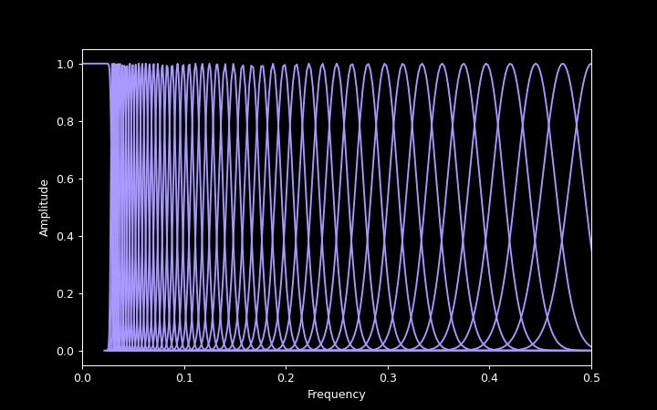
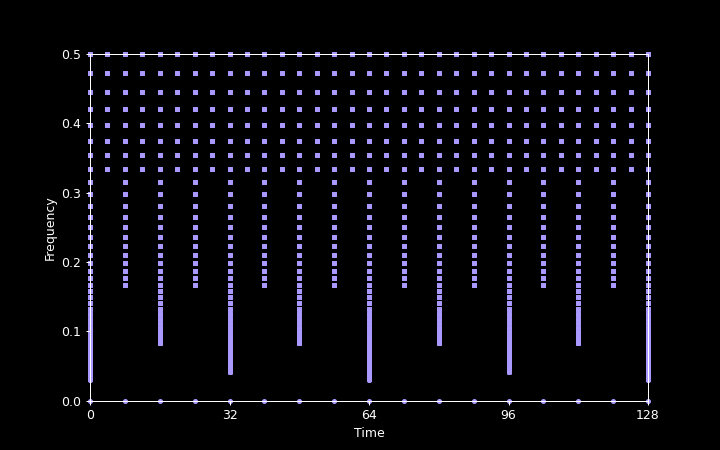
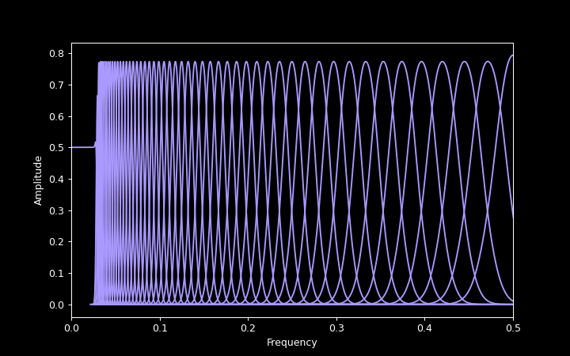

The Gaborator performs three main functions:
The following sections give a high-level overview of each of these functions.
The first step of the analysis is to run the signal through an analysis filter bank, to split it into a number of overlapping frequency bands.
When using a logarithmic frequency scale, the filter bank consists of a number of logarithmically spaced Gaussian bandpass filters and a single lowpass filter. Each bandpass filter has a bandwidth proportional to its center frequency, which means they all have the same quality factor Q and form a constant-Q filter bank. The highest-frequency bandpass filter will have a center frequency close to half the sample rate. In the graphs below, this is labeled 0.5 because frequencies in the Gaborator are generally given in units of the sample rate. The lowest-frequency bandpass filter should be centered at, or slightly below, the lowest frequency of interest to the application at hand. For example, when analyzing audio, this is often the lower limit of human hearing; at a sample rate of 44100 Hz, this means 20 Hz / 44100 Hz ≅ 0.00045. This lower frequency limit is referred to as the minimum frequency or fmin.
Although frequencies below fmin are assumed to not be of interest, they nonetheless need to be preserved to achieve perfect reconstruction, and that is what the lowpass filter is for. Together, the lowpass filter and the bandpass filters overlap to cover the full frequency range from 0 to 0.5.
The spacing of the bandpass filters is specified by the user as a number of filters (or, equivalently, bands) per octave. For example, when analyzing music, this is often 12 bands per octave (one band per semitone in the equal-tempered scale), or if a finer frequency resolution is needed, some multiple of 12.
The bandwidth of each individual bandpass filter is chosen to achieve a reasonable amount of overlap with the adjacent filters. If the bandwidth is too narrow, there will be too little overlap, causing deep gaps between the bands. If it is too wide, there will be a great deal of overlap, resulting in a blurred spectrogram with poor frequency selectivity and highly redundant coefficients.
Since the Gaborator uses Gaussian bandpass filters, it defines the width of each filter in terms of its standard deviation. The overlap is defined as the ratio of this standard deviation to the spacing between adjacent bands. The default value for the overlap is 0.7, meaning the standard deviation of each Gaussian filter is 0.7 times the local spacing between adjacent filters.
The following plot shows the frequency responses of the analysis filters at 12 bands per octave and fmin = 0.03. A more typical fmin for audio work would be 0.00045, but that would make the plot hard to read because both the lowpass filter and the lowest-frequency bandpass filters would be extremely narrow.

The bandpass filters produce a complex-valued output representing the amplitude and the phase of the signal within each band, and sampling this output produces the final spectrogram coefficients. Since the bandwidth of an individual band is smaller than that of the input signal as a whole, it can be sampled at a reduced sample rate.
To minimize the amount of coefficient data, each band should in principle be sampled at a different sample rate, but dealing with a large number of different sample rates would be cumbersome. Instead, all bands are sampled at rates that are the input sample rate divided by some power two, oversampling the coefficients at the next higher such rate as needed. This also has the advantage that the sampling can be synchronized to make the samples of many frequency bands coincide in time, which can be convenient in later analysis or spectrogram rendering.
The center frequencies of the bands and the sample points in time together form a two-dimensional, multi-resolution time-frequency grid, where high frequencies are sampled sparsely in frequency but densely in time, and low frequencies are sampled densely in frequency but sparsely in time.
The following plot illustrates the time-frequency sampling grid corresponding to the parameters used in the previous plot. Note that frequency was the X axis in the previous plot, but is the Y axis here. The plot covers a time range of 128 signal samples, but conceptually, the grid extends arbitrarily far in time, in both the positive and the negative direction.

When using a linear or mel frequency scale, no special lowpass band is needed because frequency scale extends to zero. In the case of a linear frequency scale, no multirate processing is needed, either, and the sampling grid is uniformly spaced in both the time and frequency dimensions.
Resynthesizing a signal from the coefficients is more or less the reverse of the analysis process. The coefficients are upsampled to the original signal sample rate and run through a reconstruction filter bank that is a dual of the analysis filter bank. The construction of the dual filters is based on the methods described by Velasco, Holighaus, Dörfler, and Grill in the papers Constructing an invertible constant-Q transform with nonstationary Gabor frames, 2011 and A Framework for invertible, real-time constant-Q transforms, 2012.
The following plot shows the frequency responses of the reconstruction filters corresponding to the analysis filters shown earlier.

Although the bandpass filters look superficially similar to the Gaussian filters of the analysis filter bank, their shapes are actually subtly different.
Rendering a spectrogram image from the coefficients involves taking the magnitude of each complex coefficient, and then resampling the resulting multi-resolution grid of magnitudes into an evenly spaced pixel grid.
Because the coefficient sample rate varies by frequency band, the resampling required in the horizontal (time) direction also varies. Typically, the high-frequency bands of an audio spectrogram have more than one coefficient per pixel and require downsampling (decimation), some bands in the mid-range frequencies have a one-to-one relationship between coefficients and pixels, and the low-frequency bands have more than one pixel per coefficient and require upsampling (interpolation).